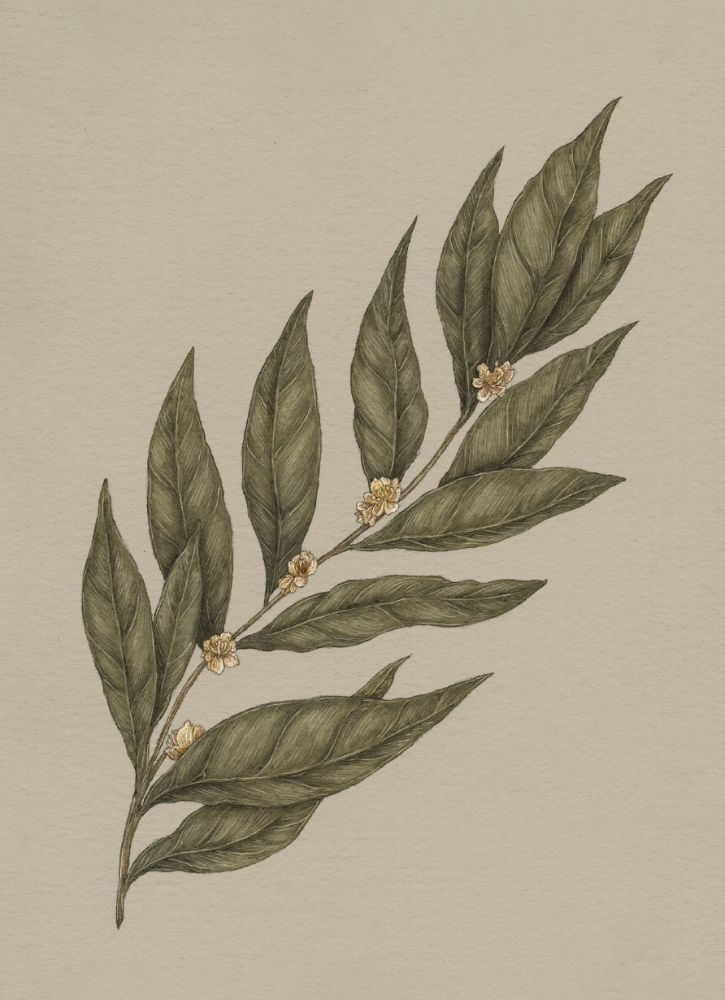

Plate LAUREL
The Language of Flowers
Laurel Study

Laurel
Laurus
Definition: A plant associated in floriography with glory, victory, and success.
Meaning
- Glory
- Victory
- Success
Origin
Ancient Olympic victors were crowned in wreaths of laurel, a tradition that was said to have
originated with the Greek god Apollo. Pursued by Apollo, the nymph Daphne begged her father to protect
her from his advances. Her father, Peneus, answered Daphne's plea by turning her into a laurel tree.
After seeing Apollo's sadness at her transformation, Daphne is said to have crowned him with her leaves.
Pair With
Add bouquet pairings or companion flowers here.